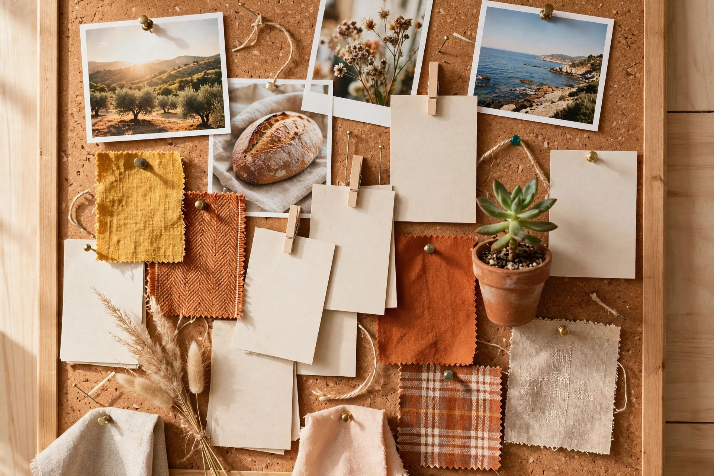

Pinterest for Small Business: The One Social Channel That Sends Clicks
Published · Last updated

Every social platform except one is built to keep people on the platform. Pinterest is built to send them somewhere: it's a visual search engine wearing a social network's clothes, and for the right small business it's the cheapest second search engine available.
The platform facts
Pinterest reported 619 million monthly users in Q4 2025 (a later company figure put it near 640 million) and about 80 billion searches a month. The two statistics that matter for a small site: over 50% of searches are commercial in nature, and 96% are unbranded — people search "small kitchen storage ideas," not a company name. That is exactly the audience a new site needs and cannot reach on Google yet (TechCrunch, from Pinterest's earnings reports).
What practitioners report
Case-study numbers for Pinterest are agency- and operator-reported, so treat magnitudes as directional: one agency programme for a lifestyle/parenting blog grew outbound clicks from about 1,000 a month to a best month of 7,653 (+433% year over year, May–December 2025); a micro-niche travel blog case reported +62% total site traffic in 90 days after fixing its Pinterest SEO (agency case study). The consistent finding across independent reports is not the size of the spikes — it's the lifespan: pins keep sending clicks for years, where a feed post is dead in 48 hours. Typical timelines: first outbound clicks in 4–12 weeks, compounding over six months and more.
Fit is everything
Pinterest works where the niche is visual and project-based: recipes and food, home and DIY, crafts, gardening, weddings, fashion and beauty, travel, printables, gift ideas. It is weak for B2B services, local services, and abstract or technical explainers — if your customer would never pin your topic to a board, skip this channel and put the time into search and tools instead.
How to run it without living on it
- One account per niche, not per website and not one mega-account. Pinterest's relevance signals are topical; a coherent account serving several same-topic sites outperforms both extremes.
- Templated pins. Generate pin images from the article's title and photo with a fixed template, and schedule them — fresh pins for new and refreshed posts, on a cadence you set once.
- Keyword the pins like search results: titles and descriptions in the words people type into Pinterest's search box, boards named for topics, not for your brand.
- Link every pin to the matching page — the pin is an ad for one specific, satisfying click.
Set up this way, Pinterest becomes what the research ranks as the #2 acquisition method for small sites: zero cash, low ongoing time, and a traffic source that doesn't care what Google's next update does.
This guide is part of PlanPrice's marketing section. Figures are drawn from the published studies and platform data linked inline; where a number comes from a single operator's or vendor's report, the guide says so.